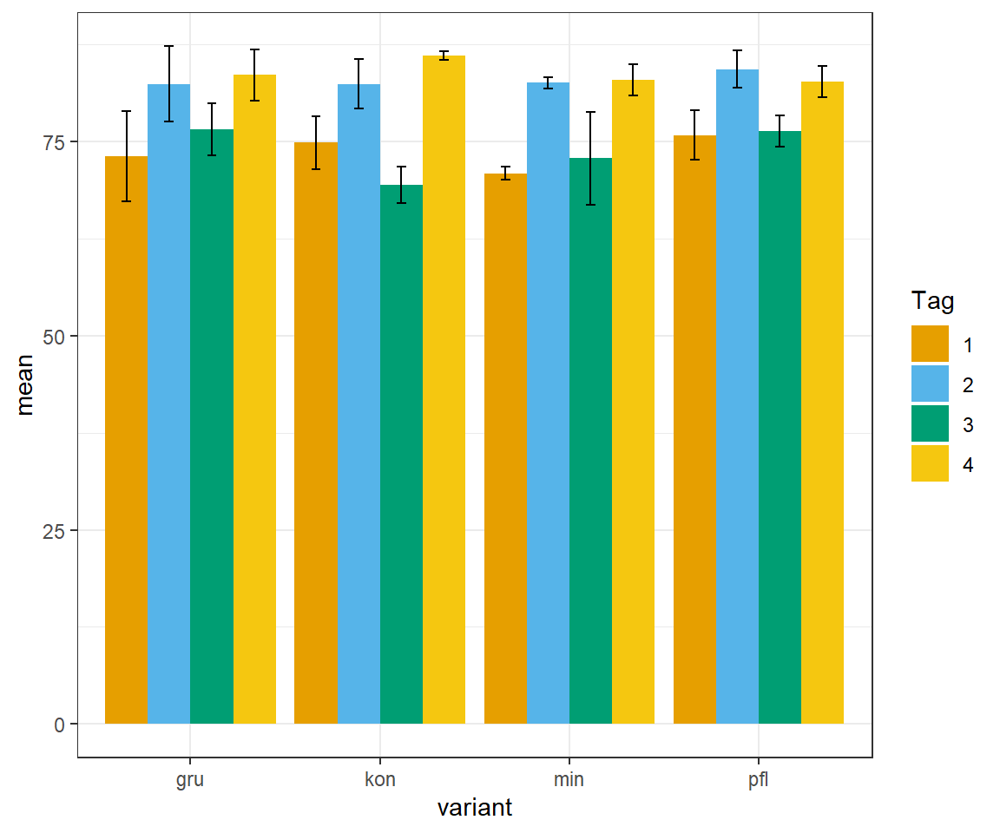
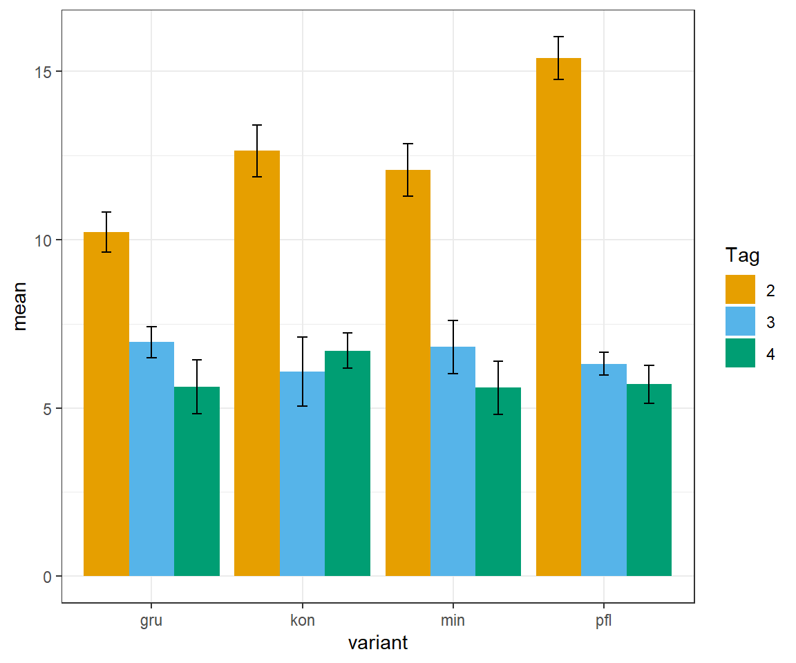

pacman::p_load(tidyverse, magrittr, readxl, see)8 Auswertung von Pflugdaten mit ggplot Templates
Version vom March 16, 2023 um 09:30:58
Wir wollen folgende R Pakete in diesem Kapitel nutzen.
In diesem Beispiel wollen wir eine Exceldatei mit mehreren Tabellenblättern in eine Liste einlesen. Dann werden wir noch das Template in ggplot kennen lernen. Wir können nämlich auf Daten mit den gleichen Spaltennamen auch immer wieder den gleichen Plot anwenden. Das macht es natürlich recht einfach, denn wir müssen nicht immer den gleichen R Code tippen und Kopieren.
Fangen wir also alle Tabellenblätter einer Exceldatei einzulesen. Wir brauchen dafür den Pfad zu der Datei. Hier bei mit ist es recht einfach, aber bei dir mag es etwas komplizierter sein. Du kannst auch einfach die Datei einmal über das RStudio einlesen und dann den Pfad kopieren.
plowing_file <- file.path("data/plowing_data.xlsx")In Folgenden leiten wir den Pfad in die Funktion excel_sheets() die uns dann die einzelnen Tabellenblätter wiedergibt. Dann müssen wir noch den Vektor mit den Tabellenblätternmane benennen. Dann können wir die Funktion map() nutzen um alle Blätter, die sich in der Exceldatei im Pfad befinden, in eine Liste laden.
plowing_lst <- plowing_file %>%
excel_sheets() %>%
rlang::set_names() %>%
map(read_excel, path = plowing_file)Wir wollen jetzt auf der Liste mit der Funktion map() noch ein paar Anpassungen durchführen. Die Funktion map() erlaubt uns andere Funktion auf alle Listeneinträge der Liste anzuwenden. Als erstes Sortieren wir alle Tibble in jedem Listeneintrag und verwandeln dann die Spalten in Faktoren, die eben auch Faktoren repräsentieren.
plowing_lst <- plowing_lst %>%
map(~arrange(.x, day, block, variant)) %>%
map(~mutate(.x,
block = as_factor(block),
variant = as_factor(variant),
day = as_factor(day))) Jetzt brauchen wir aber die Datensätze wieder einzeln und wollen uns daher einmal die beiden Listen as und water mit der Funktion pluck() aus der Liste rausziehen und in ein eigenes Objekt abspeichern.
as_tbl <- pluck(plowing_lst, "as")
water_tbl <- pluck(plowing_lst, "water")Nun kommen wir zu der Möglichkeit ein Template in ggplot anzulegen. Wir bauen uns dafür einfach genau so wie immer ein ggplot. Mit der Ausnahme, dass wir keine Daten in die Funktion ggplot() stecken sondern eine leere Funktion ggplot() mit der Funktion aes() verbinden. Das machen wir dann für alle Layer, die wir dann in dem ggplot() sehen wollen. Dann speichern wir das ggplot Objekt für unseren Barplot ab.
p_template <- ggplot() +
aes(x = variant, y = mean, group = day, fill = day) +
geom_bar(stat = "identity", position = position_dodge()) +
geom_errorbar(aes(ymin = mean-sd, ymax = mean+sd),
width = 0.2, position = position_dodge(0.9)) +
theme_bw() +
labs(fill = "Tag") +
scale_fill_okabeito()Wir wollen jetzt einmal für das Outcome as den Barplot erstellen. Dafür brauchen wir wieder die Daten, die wir uns mit der Funktion summarise() zusammenbauen. Wir haben dann die Mittelwerte und die Standardabweichung für die Behandlungen.
as_stat_tbl <- as_tbl %>%
group_by(day, variant) %>%
summarise(mean = mean(as),
sd = sd(as))`summarise()` has grouped output by 'day'. You can override using the `.groups`
argument.In der Abbildung 8.1 sehen wir dann den Barplot für unser Outcome as. Der Barplot ist jetzt erstmal nichts besonderes, aber wie wir den Plot bauen schon. Wir nutzen dafür den Operator %+%. Mit dem Operator %+% können wir einen leeren ggplot mit einem neuen Datensatz verbinden. Wichtig ist nur, dass die Spaltennamen dann jeweils übereinstimmen.
p_template %+% as_stat_tbl
as.Das ganze können wir dann auch einmal für das Outcome water machen.
water_stat_tbl <- water_tbl %>%
group_by(day, variant) %>%
summarise(mean = mean(water),
sd = sd(water))`summarise()` has grouped output by 'day'. You can override using the `.groups`
argument.In der Abbildung 8.2 sehen wir dann die Anwendung des Operators %+% auf den Datensatz für unser Outcome water. Das ist jetzt natürlich sehr effizient. Wir können das Template auf die anderen beiden Outcomes ebenfalss anwenden. Damit sind wir sicher, das wir immer die gleiche Beschriftung und eben auch die gleichen Farben haben.
p_template %+% water_stat_tbl
water.Wie immer musst du bei jedem Beispiel schauen, ob du alles so stark automatisieren willst. Meistens ist die Automatisierung nicht notwendig, aber wenn du wie ich dann teilweise sehr viele Datensätze auswertest, dann geht die Auswertung natürlich mit einer Automatisierung sehr viel schneller.